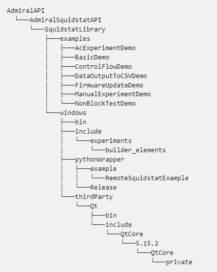

|
Squidstat API User Manual
|
|
Squidstat API User Manual
|
This section provides guidance to developers on building the SquidstatLibrary using the command line. By following the instructions outlined here, developers can effectively compile and construct the SquidstatLibrary, enabling them to incorporate its functionality into their projects. The step-by-step process explained below will help developers easily set up the SquidstatLibrary and make it ready for integration, ensuring a seamless experience for utilizing its capabilities through the command line interface.
If Git is installed correctly, you should see the version information displayed in the terminal.
AdmiralAPI, it is recommended to choose a name without spaces.AdmiralAPI, and open the command prompt. git clone https://github.com/Admiral-Instruments/AdmiralSquidstatAPI
The result in the command prompt will look like this:
If you check in your directory, you will find a new directory named "AdmiralSquidstatAPI" which contains the Admiral Instruments API.

If the device you are on is a newer Mac with an ARM64 processor (M1, M2, etc), you will need to do an additional set of steps to include the Squidstat API.
AdmiralSquidstatAPI/SquidstatLibrary/Linux, mac, windows, and mac.tar.gz.mac directory. It contains the library for Intel based mac processors.mac.tar.gz in the Finder window.mac/ directory get automatically created.cmake in the command prompt and press Enter.AdmiralAPI.Open command prompt. Type the command below. This command will generate the build. It will take compiler which is available on your computer. Make sure on Windows you have the MSVC 64 compiler, and on Mac You have the Clang compiler.
Note: If you want use a different build generator, type the name of that generator followed by -G. You can check the build generator option with the command cmake -G.
SquidstatLibrary directory.